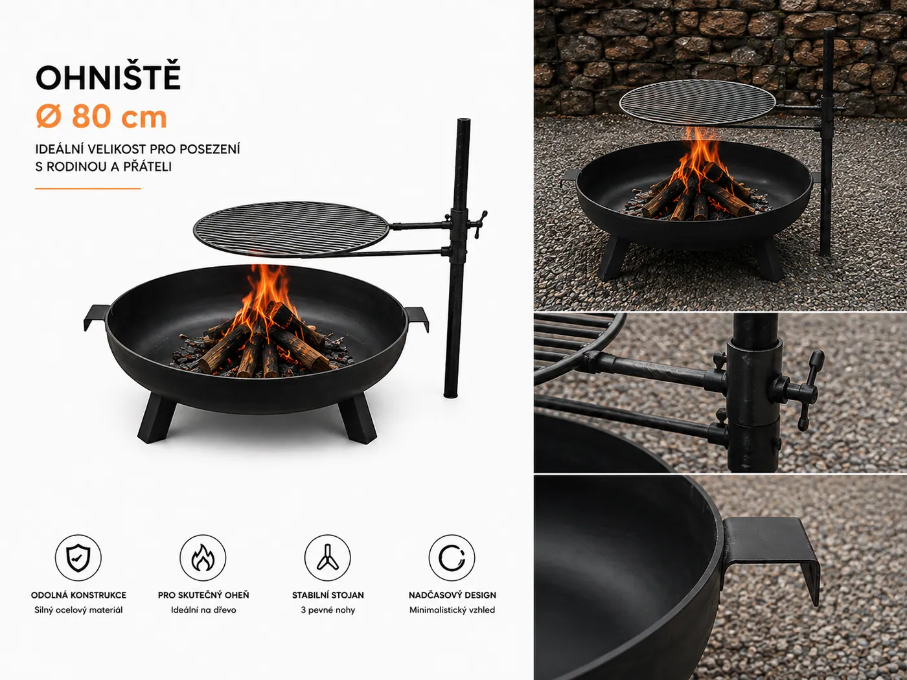
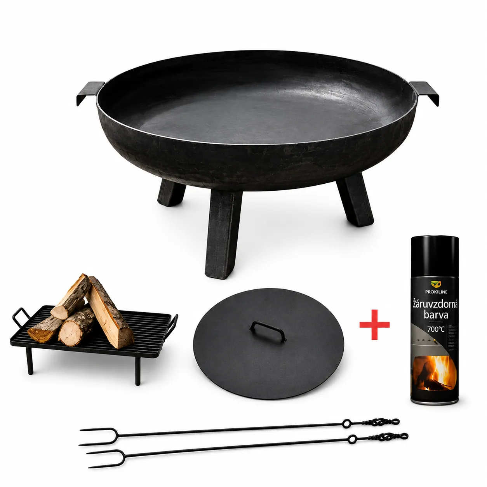

Akce
STANDART – Akční set: Venkovní zahradní ohniště 60 – 100cm + víko + rošt do ohniště + 2 x kovaná vidlice
4 599 Kč4 998 Kč
Varianty
- Osobní odběr v dílně Hájecká 1109, Bučovice (Po–Čt, po domluvě)
- Doprava po ČR i na Slovensko TOPTRANS až na adresu za 399 Kč
- Poradíme s výběrem +420 774 641 994
Popis výrobku
STANDART – Akční set obsahuje následující produkty:
1.Venkovní zahradní ohniště
Průměr: 60 cm – 100 cm
Výška 35 cm
Síla stěny : 3 mm
2.Víko:
Průměr: 60 – 100 cm
3.Rošt do ohniště:
Rozměry: 30 x 40 cm
Výška: 5 cm
4.Kovaná vidlice 2 ks
Délka: 100 cm
5.Primalex žáruvzdorná barva
Ohniště je dodáváno tradičně bez povrchové úpravy. Pro antikorozní barevný nátěr doporučujeme barvu na kovy – kovářská čerň.
Jak se starat o ohniště?
Kovové ohniště vyžaduje pravidelnou údržbu, aby se zachovalo v dobrém stavu a prodloužila se jeho životnost. Po každém použití je třeba očistit ohniště od popela a zbytků jídla. Při delší nečinnosti se doporučuje ohniště překrýt plachtou nebo ochranným krytem. Při prvním použití je vhodné ohniště vykouřit a ohřát postupně, aby nedocházelo k praskání materiálu.
Návod, jak připravit ohniště na novou sezónu krok za krokem, naleznete zde.